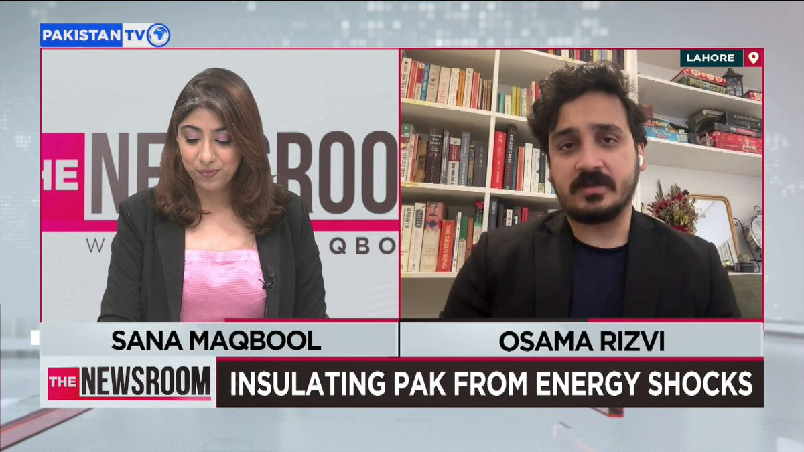
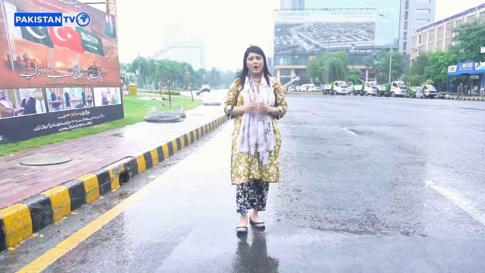
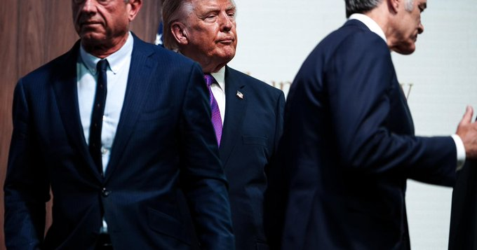

@CBSNews
📝 原文: Big Bear bald eagle Jackie dies after health "continued to deteriorate," California veterinary center says.
🇨🇳 译文: 加州兽医中心表示，大熊秃鹰杰基因健康状况“持续恶化”而死亡。

🕒 2026-08-10T21:30:28+00:00
| 来源 | 旧窗口内数量 | 本次新增 | 本次淘汰 | 当前窗口内共有 |
|---|---|---|---|---|
| 推文 + Dawn 新闻 | 0 | 41 | 0 | 41 |
| ARY News | 0 | 0 | 0 | 0 |
注：淘汰数 = 旧窗口内数量 + 本次新增 - 当前窗口内共有










暂无文章。